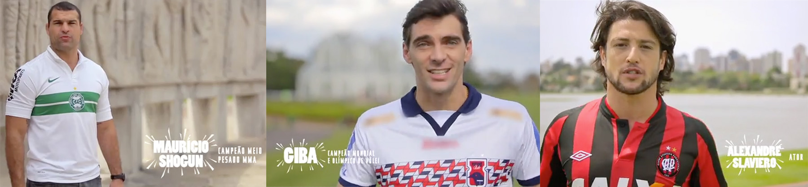
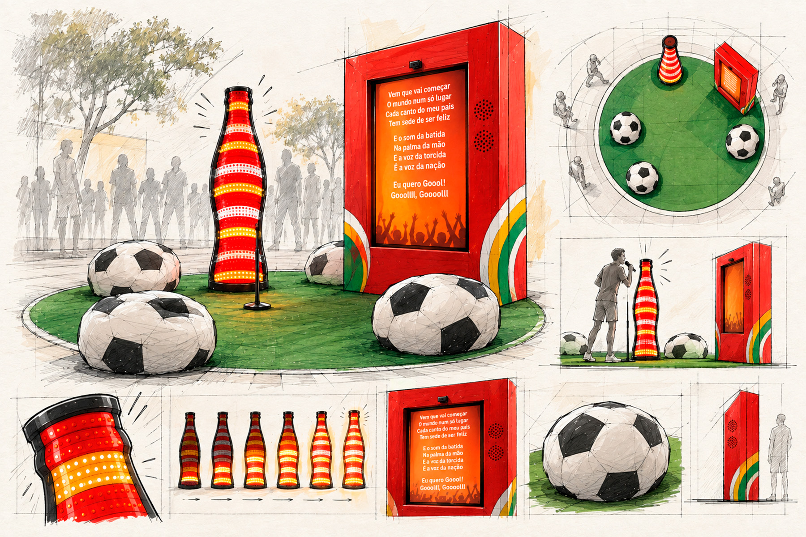
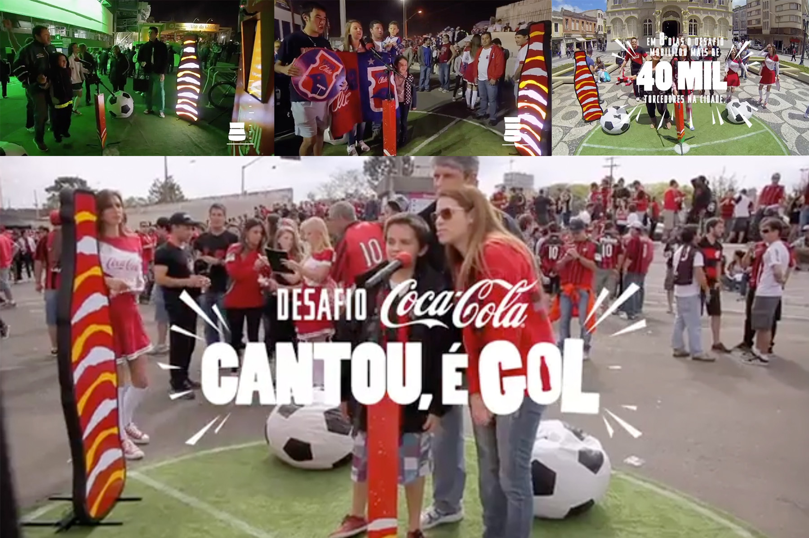
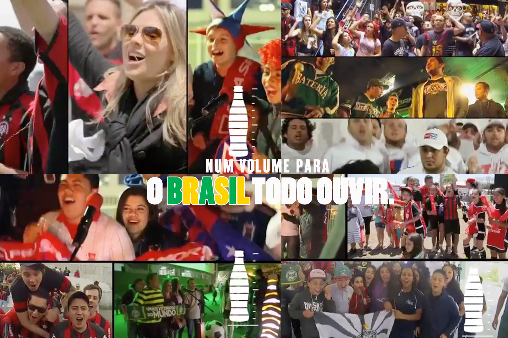

Cada torcida foi convocada por um torcedor ilustre dos seus times.

Levamos o desafio para todo lugar: estádios, escolas, ruas e espaços públicos.

Quanto mais gente cantava, maior o desafio ficava. Mais vozes, mais volume, mais rivalidade.

Até que revelamos o que estava por trás dessa disputa: o jingle da Copa regravado por milhares de torcedores rivais. Criamos uma versão única da música oficial da Copa com as vozes de torcedores que, antes da ação, jamais cantariam juntos.

O jingle com as vozes dos torcedores ecoou pelas rádios do Paraná durante toda a Copa do Mundo e também foi utilizado em ações de ativação da marca nas FIFA Fan Fests.
Bronx Comunicação
Coca-Cola
Creative Director / Copywriter